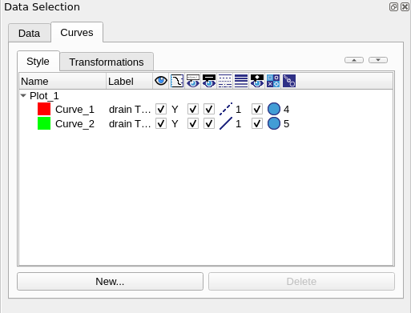

3.1 Introduction
3.2 Creating an XY Plot
3.3 Adjusting Curve Properties
3.4 Modifying Plot Appearance
Sentaurus Visual can create xy plots, also referred to as 1D plots. Such plots are commonly produced to visualize data stored in PLT files produced by Sentaurus Device.
This section demonstrates how to create Id–Vg curves using the user interface of Sentaurus Visual and how to customize plot appearance.
The files discussed in this section are part of the Sentaurus Workbench project export. The complete project can be investigated from within Sentaurus Workbench in the directory Applications_Library/GettingStarted/svisual/export.
To follow this section, load the files idvg1_des.plt and idvg2_des.plt from the Sentaurus Workbench project Applications_Library/GettingStarted/svisual/export into Sentaurus Visual.
This section concentrates on the Sentaurus Visual user interface and functionality.
Loading an xy file does not automatically plot the dataset associated with it. Instead, the loaded datasets appear in the Data Selection panel, and a blank plot is created. To plot Id–Vg curves:
Figure 1. Data Selection panel showing active 1D datasets and interface to create xy plots.
Id–Vg curves are generated according to this selection. At this time, the plot appearance, such as legend font size and tick number formatting, reflects user preferences. Subsequent sections will show how to customize the plot appearance. To make future plots appear in a particular format, you need to customize the user preferences for xy plots.
Figure 2. Drain current versus gate voltage curves plotted in Sentaurus Visual for two datasets. The plot appearance has not been customized and reflects user preferences.
To adjust the curve appearance on the plot, the curve must be selected first. To select a curve, either click the curve itself with the Select tool, or select the curve from the Curves tab of the Data Selection panel.

Figure 3. Curves tab of Data Selection panel showing 1D curves.
If two curves are close to each other, accurately picking one curve using the Select tool can be challenging. To facilitate selection of curves that are in close proximity, Sentaurus Visual can change between two neighboring curves when selecting a point.
You can change curve properties on the Style subtab. You can select one or more curves, and change properties such as visibility and line thickness by using the icons above the list of curves.
You can change the order of curves by selecting the required curves and then clicking the Up Arrow or Down Arrow button in the upper-right part of the tab.
To control the axis range, number formatting, font selection, font size, and so on, click the axis to open the Axis Properties panel.
Depending on the window resolution and some other Sentaurus Visual settings, the Axis Properties panel might open another panel and you will need to move the Axis Properties panel to the front manually by clicking it.
Figure 4. Axis Properties panel.
To edit the axis title, click the Title/Scale tab. To include Greek symbols in the title, use the following XML tag: <greek>character</greek>.
To format text as a subscript, use the following XML tag: <sub>character</sub>. To format text as a superscript, use the following XML tag: <sup>character</sup>.
Figure 5. Editing axis title in Axis Properties panel. (Click image for full-size view.)
Unicode character support is available only for xy plots. You can use special characters in the plot title, axis titles, and legend of xy plots.
Both 2D and 3D plots do not support unicode characters.
To modify the legend appearance, click a legend. Similarly, to edit general plot properties, click anywhere on the plot. The Plot Properties panel allows you to modify plot scaling, the grid, and colors.
Copyright © 2022 Synopsys, Inc. All rights reserved.
{kind=link}